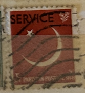
| SOURCE | TITLE| IMAGE MATCH | click to source page |
| HipStamp | Pakistan 1959 SG#O65 Red Crescent & Star SERVICE Used | Asia - Pakistan, General Issue Stamp / HipStamp | 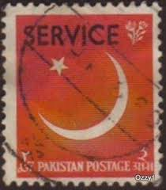 |
| Banknotecoinstamp | Pakistan Service Postage Stamp Used – Banknotecoinstamp | 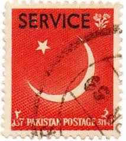 |
| The Royal Philatelic Society London | Pakistan Beyond the Catalogue; Birth, Conversion and Divorce | 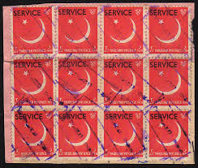 |
| HipStamp | Browse Products in British Commonwealth / HipStamp | 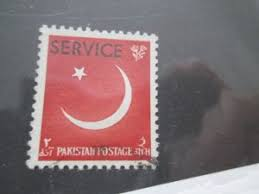 |
| HipStamp | Browse Products in British Commonwealth / HipStamp | 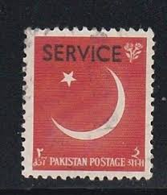 |
| Todocolección | sellos pakistán v - Compra venta en todocoleccion | 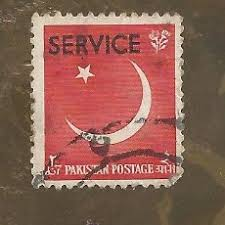 |
| eBay UK | PAKISTAN 1959 SG O65 Sa. SCARLET OPT. SERVICE - MNH | eBay UK | 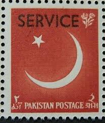 |
| Pakistan Philately | Pakistan Philately | 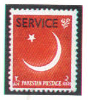 |
| Dreamstime.com | Officials Serie Stock Photos - Free & Royalty-Free Stock Photos from Dreamstime | 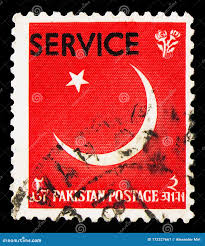 |
| Shutterstock | 262 Pakistan Postal Service Royalty-Free Images, Stock Photos & Pictures | Shutterstock | 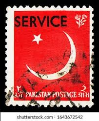 |
| CollectorBazar | PAKISTAN-USED-SERVICE OVERPRINT-STAR-MOON-PPA972 | 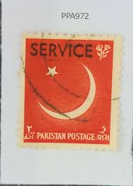 |
| commonwealthstamps.com | Official Stamps of Pakistan Listed in Date Order | 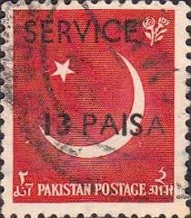 |
| Alamy | Pakistan stamp hi-res stock photography and images - Alamy | 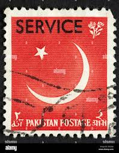 |
| alamyimages.fr | Des timbres du Pakistan Photo Stock - Alamy | 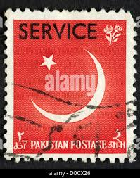 |
| iStock | Postage Stamp Pakistan 1956 9th Anniversary Of Independence Stock Photo - Download Image Now - iStock | 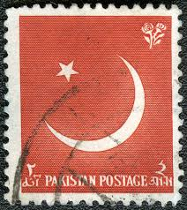 |
| commonwealthstamps.com | Pakistan Stamps 1956 Ninth Anniversary of Independence SG 83 Fine Mint Scott 83 | 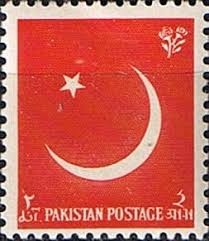 |
| Etsy | TURKEY - SILK - National Flag No.17 - 1934 Cigarette Tobacco Card Issue. J.wix & Sons Ltd. C/w Original Wax Wrapper. (TA05) - Etsy Canada | 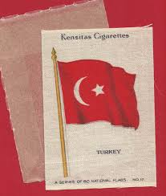 |
| eBay | Pakistan - 1956 The 9th Anniversary of Independence | eBay | 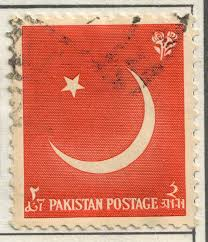 |
| STAMPS OF THE WORLD | 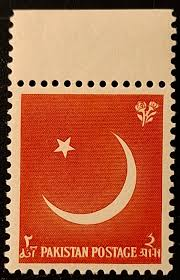 | |
| HipStamp | Search "Pakistan 1956" / HipStamp | 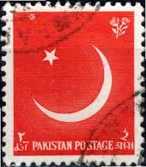 |
| eBay UK | Pakistan - red | eBay UK | 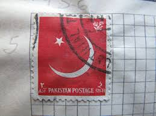 |
| Alamy | Cancelled postage stamp printed by South Africa, that shows Maria de la Quellerie, wife of Jan van Riebeeck Stock Photo - Alamy | 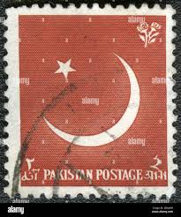 |
| HipStamp | Search "Pakistan 1956" in British Commonwealth / HipStamp | 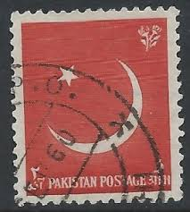 |
| HipStamp | Pakistan 83 Coat of Arms 1956 | Asia - Pakistan, General Issue Stamp / HipStamp | 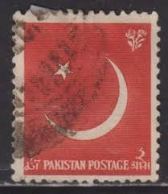 |
| mintindia.in | www.mintindia.in: www.mintindia.in:We have launched this website with primary objective to spread education about various coins of India and around the earth to help each numismatist, Introducing huge collections of the antique material | 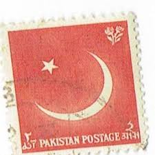 |
| Shutterstock | 1+ Thousand Pakistan Postage Stamps Royalty-Free Images, Stock Photos & Pictures | Shutterstock | 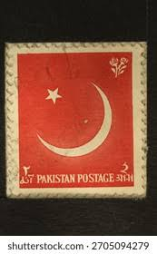 |
| May Allah punish England!' — German stamp issued during the First World War (ca. 1915) celebrating the country's alliance with the Ottoman Empire. : r/PropagandaPosters | 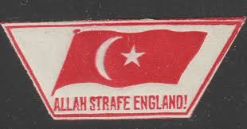 | |
| HipStamp | Search "Pakistan 1956" in British Commonwealth / HipStamp | 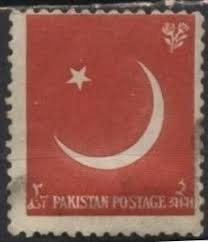 |
| Shutterstock | Pakistan Circa 1960 Stamp Printed Pakistan Stock Photo 330867647 | Shutterstock | 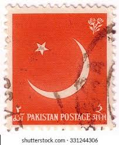 |
| HipStamp | TURKEY Scott RA208 MH* Postal Tax stamp | Europe - Turkey, Revenues - Postal Tax Stamp / HipStamp | 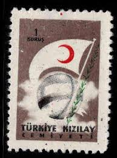 |
| PicClick AU | PAKISTAN SPECIAL ADHESIVE Fine M.u.h. 9 Stamps $16.00 - PicClick AU | 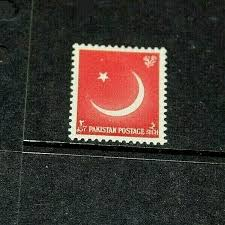 |
| 123RF | TURKEY- CIRCA 1941: Stamp Printed By Turkey, Shows Soldier And Map Of Turkey, Circa 1941 Stock Photo, Picture and Royalty Free Image. Image 12740801. | 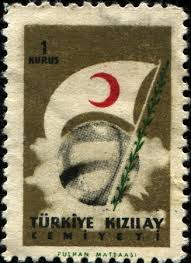 |
| eBay UK | Pakistan Asian Stamps for sale | eBay UK | 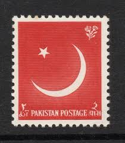 |
| prints-online.com | Sultan Mehmed V Reshad Print: Central Powers Leaders. Art Prints, Posters & Puzzles from Mary Evans | 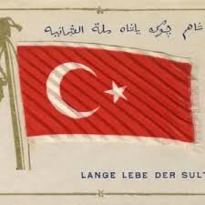 |
| Dreamstime.com | 305 Postage Stamp Pakistan Stock Photos - Free & Royalty-Free Stock Photos from Dreamstime | 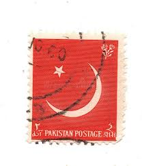 |
| philatelicmarket.com | post stamps Day of Democracy and National Unity s/s turkey 2018 | 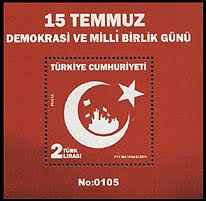 |
| militaryimages.net | Photos - Turkey -PRE & During WWII | Page 6 | A Military Photo & Video Website | 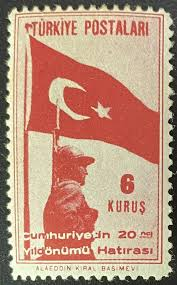 |
| Alamy | Postage stamp from Turkey in the Red Crescent Society, 1957 series Stock Photo - Alamy | 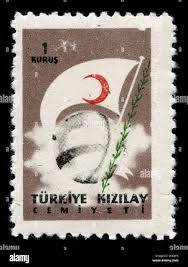 |
| Alamy | A pakistan flag hi-res stock photography and images - Alamy | 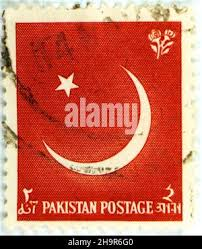 |
| Alamy | Pakistan Postage Stamp - Crescent (Moon Stock Photo - Alamy | 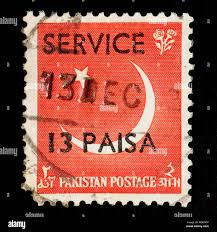 |
| Todocolección | sello bhutan bután filatelia correio correos st - Buy Stamps from other Asian countries on todocoleccion | 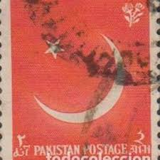 |
| Stampedia | stampedia TURKEY STAMP catalog | 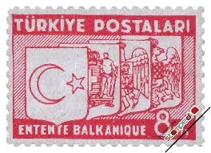 |
| cypnet.co.uk | North Cyprus: Tourist Guideline - Useful Information | 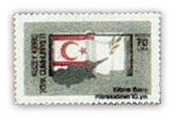 |
| HipStamp | Turkey 1957 - M - Scott #O24B * | Europe - Turkey, Officials Stamp / HipStamp | 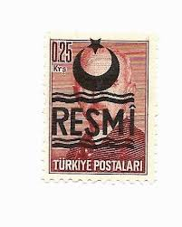 |
| Alamy | Star and crescent on postage stamp of Pakistan Stock Photo - Alamy | 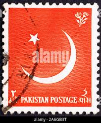 |
| lastdodo.com | Eng Siak Loy Stamp catalogue - LastDodo | 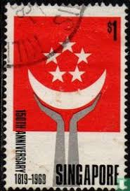 |
| eBay | Mint Never Hinged/MNH Historical Events Turkish Stamps for sale | eBay | 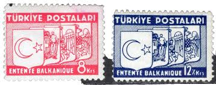 |
| Colnect | Stamp: Half Moon and Star (Pakistan(Officials) Mi:PK D41,Sn:PK O40,Sg:PK O40,Sid:PK S40 📮 | 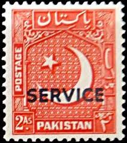 |
| Maps on Stamps | Maps on Stamps : Turkey | A Database of Cartophilately | 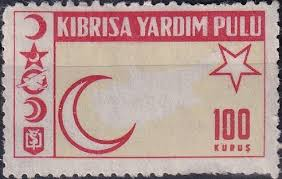 |
| PICRYL | map from "A System of Geography, for the use of Schools. Illustrated with more than fifty cerographic maps, and numerous wood-cut engravings" - PICRYL - Public Domain Media Search Engine Public Domain | |
| Alamy | Postal tax stamp from Turkey depicting a flower and red crescent Stock Photo - Alamy | |
| eBay | D100540 United Nations Flag Series Turkey FDC United Nations New York Bureau | eBay | |
| FamousFix.com | List of Vassal and tributary states of the Ottoman Empire - FamousFix List | |
| eBay | Handstamped Individual Turkish Stamps for sale | eBay | |
| Can somebody tell me something about this stamp | ||
| Getty Images | Turkey Grunge Postage Stamp Vintage Postcard Vector Illustration With Turkish National Flag Isolated On White Background Retro Style High-Res Vector Graphic - Getty Images | |
| Cigarette Card - Arms & Flag of Egypt | ||
| VintagePostcards.com | Turkey Flag Moon Star Pray - Advertising - Vintage Postcards | VintagePostcards.com: vintage, old, antique postcards for collectors. | |
| prints-online.com | Ottoman Empire Long Live the Sultan Flag Print circa 1910. Art Prints, Posters & Puzzles from Mary Evans |